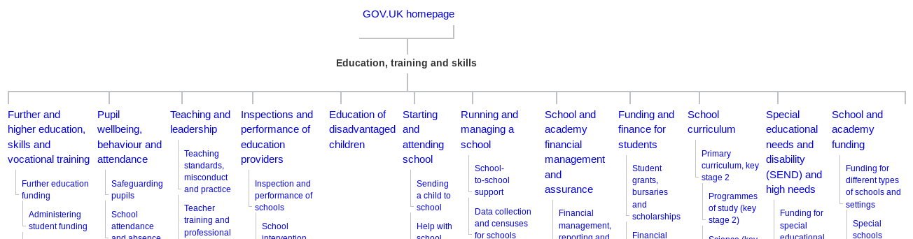
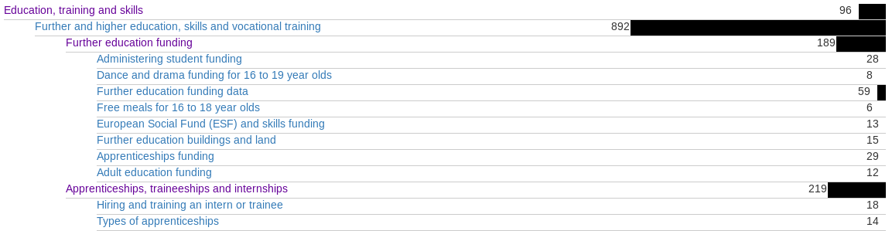
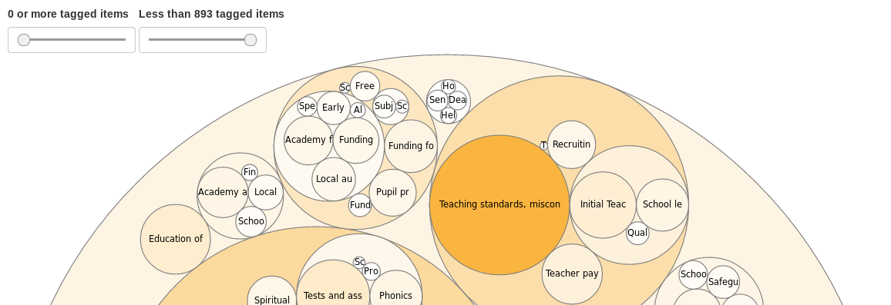

GOV.UK Taxonomy and Navigation
An overview
Taxonomy
Something about classification...
Topic Taxonomy
"The Topic Taxonomy is a classification scheme for
organising and finding content on GOV.UK, based on its
subject area."
Topic Taxonomy Structure

- It's a (mathematical) tree
- The root is the homepage
Aboutness and Specificity

- The Topic Taxonomy is about the subject area of content, or "aboutness"
- Taxons lower down the tree should be more specific
Content is "tagged" to taxons

This is a visualisation of the volume of content tagged to
each taxon.
Topic Taxonomy Scope
All content items, except the ones that aren't content...
For the full list, see
document_types_excluded_from_the_topic_taxonomy.yml
Uses of the Topic Taxonomy
- Topic pages
- Email subscriptions
- ...
Navigation
Not so new anymore,
Topic taxonomy powered
Topic Pages
- Since
-
"beta" in March, 2017
New design as of March, 2018
- Managed through
- Content Tagger
- Rendered by
- Collections
- Document type
-
taxon
A tangent about
Worldwide taxons
-
Currently use the 1st iteration of the design for
"topic" pages
- Since
- June, 2017
- Rendered by
- Collections
- Document type
-
taxon
Other navigation page types
- Mainstream browse
- Policies
- Policy areas
- Specialist Topics
- ...
Mainstream Browse
- Since
- Launch
- Managed through
- Collections Publisher
- Rendered by
- Collections
- Document type
-
mainstream_browse_page
Policies
- Since
- Launch
- Managed through
- Policy Publisher
- Rendered by
- Finder Frontend
- Document type
-
policy
Policy Areas
- Since
- Launch
- Managed through
- Whitehall
- Rendered by
- Whitehall
- Document type
-
policy_area
(Specialist) Topics/
Specialist Sectors
- Since
- ~2014
- Managed through
- Collections Publisher
- Rendered by
- Collections
- Document type
-
topic
Other navigation page types